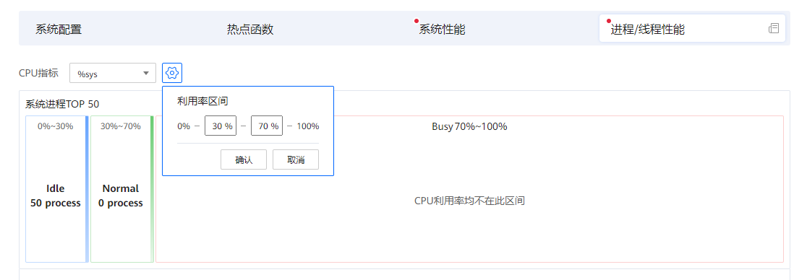
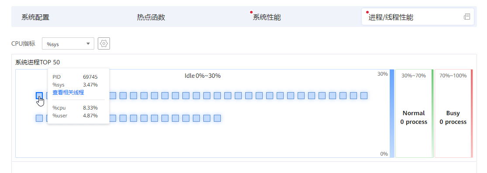
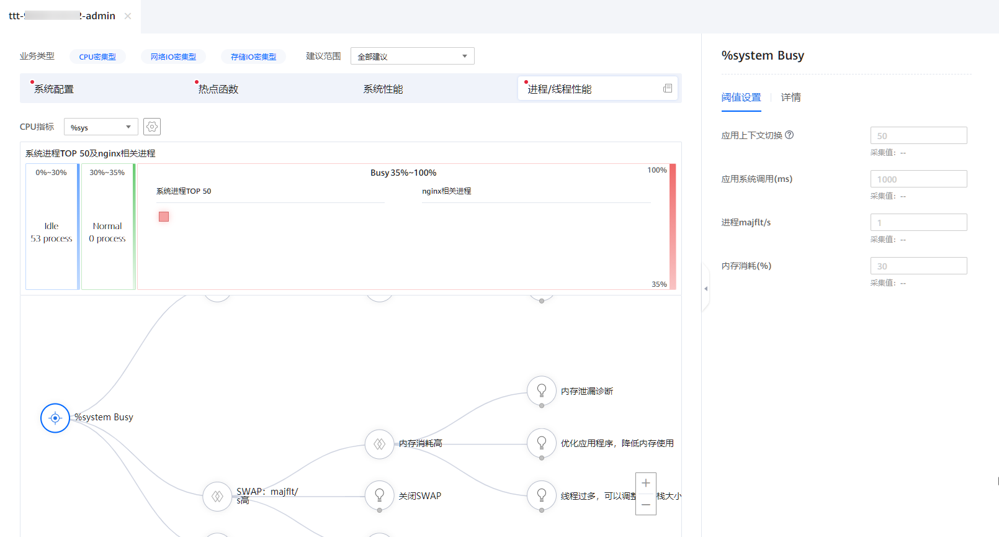
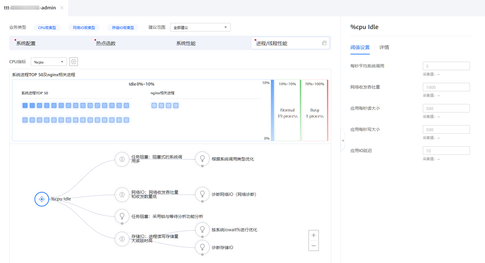

前提条件
已创建分析任务，并且成功完成分析。
操作步骤
- 在“工程管理”区域，依次单击指定工程和分析任务名称前的
 。
。展开节点列表。
- 单击节点名称查看分析结果。
打开分析结果页面。
图1 分析结果页面
- 选择业务类型。
- 查看进程/线程性能分析结果。图3 进程/线程性能页面

在“进程/线程性能”页面，可以进行以下操作。
- 在“CPU指标”下拉选择框中选择要查看的CPU指标。
表1描述了可选的CPU指标。
- 单击
 设置利用率区间。在弹出“利用率区间”对话框中设置CPU利用率Normal范围的起始值和结束值，然后单击“确认”。图4 设置利用率区间
设置利用率区间。在弹出“利用率区间”对话框中设置CPU利用率Normal范围的起始值和结束值，然后单击“确认”。图4 设置利用率区间
 - 把鼠标悬停在一个方块上，查看该CPU核的各项性能数据。图5 悬停查看CPU核性能数据

可点击“查看相关线程”查看CPU核的相关线程（线程用三角形表示）。在线程视图中，可点击左上角的PID返回。
- 单击一个方块，在右边详情区域查看该CPU核的详细进程和线程信息，包括微架构指标、访存指标、CPU亲和性、内存亲和性、操作的函数、操作的文件、操作的网口和操作的系统调用。图6 查看CPU核进程/线程详情

可单击可单击
 展开详情区域。
展开详情区域。
- 在“CPU指标”下拉选择框中选择要查看的CPU指标。
- 查看状态为Busy的CPU核的进程/线程性能优化建议拓扑树图。
- 当CPU指标设置为%user且有状态为Busy的CPU核时，页面右边可设置相关参数的阈值并查看详情，页面下方为进程/线程性能优化建议拓扑树图。图7 进程/线程性能优化建议拓扑树

表2描述了阈值设置区域的参数。
表2 阈值设置区域参数说明 参数
描述
cpu亲和性
CPU亲和性配置。
内存亲和性
内存亲和性配置。
并发数
并发数。
branch miss rate (%)
CPU运行指令分支缺失率。取值为1~100的正整数。
L1-dcache miss rate (%)
L1数据缓存缺失率。取值为1~100的正整数。
L1-icache miss rate (%)
L1指令缓存缺失率。取值为1~100的正整数。
dTLB cache miss rate (%)
数据TLB缓存缺失率。取值为1~100的正整数。
iTLB cache miss rate (%)
指令TLB缓存缺失率。取值为1~100的正整数。
fault/s
每秒系统产生的缺页数。取值为任意正整数。
表3描述了进程/线程性能优化建议拓扑树图上的主要节点。
表3 进程/线程性能优化建议拓扑树图一级节点 节点
描述
进程及其线程存在在不同NUMA NODE间切换
一个进程在执行的过程中，在不同的numa node上进行切换
进程/线程跨DIE或跨片访问内存
cpu跨片/跨DIE访问内存比例高。
并发度：并发度少
进程的线程数小于6。
Branch：Branch Miss高
指令运行分支缺失次数较多
Cache：Cache Miss高
当运算器需要从存储器中提取数据时，它首先在最高级的cache中寻找然后在次高级的cache中寻找。如果在cache中找到，则称为命中hit；反之，则称为不命中miss。
TLB：TLB Miss高
当需要访问的虚拟内存，不在TLB当中时，我们称之为TLB Miss。
内存：page fault高
内存产生的缺页数高。
JVM：JVM消耗CPU高
JVM消耗的CPU资源过高。
编译：编译器及编译选项
编译器及编译的选项。
内存访问能力评估：采用访存分析功能分析
分析内存的访存相关能力。
热点函数分析：分析TOP热点函数
分析系统或进程的热点函数。
针对表3中列出的每个问题，可以单击节点查看问题详情并单击下一级节点查看对应的优化建议。
- 当CPU指标设置为%sys且有状态为Busy的CPU核时，页面右边可设置相关参数的阈值并查看详情，页面下方为进程/线程性能优化建议拓扑树图。图8 进程/线程性能优化建议拓扑树
表4描述了阈值设置区域的参数。
表4 阈值设置区域参数说明 参数
描述
应用上下文切换
上下文切换指的是内核（操作系统的核心）在CPU上对进程或者线程进行切换。
应用系统调用
一次系统调用的过程，其实是发生了两次 CPU 上下文切换（用户态-内核态-用户态）。
进程majflt/s
每秒钟产生的主缺页数。
内存消耗 (%)
内存占用高，占比超过30%。
表5描述了进程/线程性能优化建议拓扑树图上的主要节点。
表5 进程/线程性能优化建议拓扑树图一级节点 节点
描述
调度开销：上下文切换次数高
上下文切换次数过多，会导致耗费大量CPU资源，降低性能。
SWAP：majflt/s高
每秒钟产生的主缺页数过高。
热点函数分析：分析TOP热点函数
分析系统或进程的热点函数。
针对表5中列出的每个问题，可以单击节点查看问题详情并单击下一级节点查看对应的优化建议。
- 当CPU指标设置为%cpu且有状态为Busy的CPU核时，页面右边可设置相关参数的阈值并查看详情，页面下方为进程/线程性能优化建议拓扑树图。图9 进程/线程性能优化建议拓扑树
表6描述了阈值设置区域的参数。
表6 阈值设置区域参数说明 参数
描述
每秒平均系统调用
应用每秒调用系统函数的次数。
网络收发吞吐量
单位时间内通过某个网络（或信道、接口）的数据量。
应用每秒读大小
进程每秒从硬盘读取的数据量。
应用每秒写大小
进程每秒向硬盘写入的数据量。
应用IO延迟
块 I/O 延迟（iodelay），包括等待同步块 I/O 和换入块 I/O 结束的时间，单位是时钟周期。
表7描述了进程/线程性能优化建议拓扑树图上的主要节点。
表7 进程/线程性能优化建议拓扑树图一级节点 节点
描述
任务阻塞：阻塞式的系统调用多
阻塞式的系统调用会导致性能下降。
网络IO：网络收发吞吐量和收发数量低
网络收发吞吐量和收发数量低。
任务阻塞：采用锁与等待分析功能分析
进入系统性能分析，采用锁与等待分析，确定性能瓶颈。
存储IO：进程读写存储量大或延时高
进程读写存储量大或延时高。
针对表7中列出的每个问题，可以单击节点查看问题详情并单击下一级节点查看对应的优化建议。
- 当CPU指标设置为%user且有状态为Busy的CPU核时，页面右边可设置相关参数的阈值并查看详情，页面下方为进程/线程性能优化建议拓扑树图。
- 根据优化建议拓扑树，进行调优设置。
- 查看分析结果页面的优化建议拓扑树图，单击根据配置条件
 ，单击
，单击 选择对应的调优建议。图10 优化建议拓扑树图
选择对应的调优建议。图10 优化建议拓扑树图
- 查看右侧调优建议中的相关配置、指标说明、优化建议及优化指导。单击
 确定采纳该调优建议，再次单击取消采纳该调优建议。图11 调优建议页面
确定采纳该调优建议，再次单击取消采纳该调优建议。图11 调优建议页面
- 已采纳的调优建议将会保留在关联报告中，单击页面右下角“关联报告”进入关联报告页面。
关联报告页面会显示已经采纳的所有调优建议，单击任务名称可进行查看。根据采纳的调优建议是否达到预期目标，单击左下角“有效”和“无效”进行确定。
图12 关联报告页面
- 查看分析结果页面的优化建议拓扑树图，单击根据配置条件
- 单击“进程/线程性能”右侧的
 查看进程/线程性能详细数据。图13 查看进程/线程性能详细数据
查看进程/线程性能详细数据。图13 查看进程/线程性能详细数据